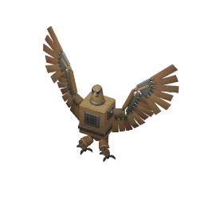
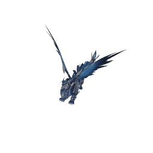
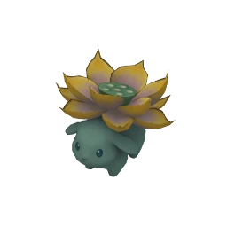
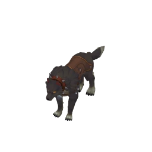
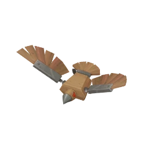
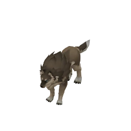
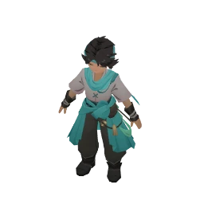
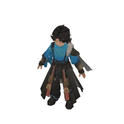

神雕4,719 顶点 · 3,430 三角形 · 1 材质下载 GLB 材质与来源着色器与原动作包Star03/Character/Character_InBattle_Outlinejy_shendiao_001 · 12 段
仙白虎4,512 顶点 · 5,482 三角形 · 2 材质下载 GLB 材质与来源着色器与原动作包Star03/Character/Character_InBattle_Outlinejy_xianbaihu_001 · 9 段boss_xianbaihu_001 · 4 段
金莲玉兔1,210 顶点 · 1,726 三角形 · 1 材质下载 GLB 材质与来源着色器与原动作包Star03/Character/Character_InBattle_XiaoGuaimon_jinlianyt_001 · 5 段
猎犬1,844 顶点 · 2,122 三角形 · 1 材质下载 GLB 材质与来源着色器与原动作包Star03/Character/Character_InBattle_XiaoGuai
小雕1,328 顶点 · 1,024 三角形 · 1 材质GLB 内含 5 段飞行动作下载 GLB 材质与来源着色器与原动作包Star03/Character/Character_InBattle_XiaoGuaimon_xiaodiao · 5 段
野狗1,620 顶点 · 1,948 三角形 · 1 材质下载 GLB 材质与来源着色器与原动作包Star03/Character/Character_InBattle_XiaoGuaimon_yegou001 · 9 段
男角色 0003,943 顶点 · 4,313 三角形 · 4 材质下载 GLB 材质与来源着色器与原动作包Star03/Character/Character_InBattle_Outline、Star03/Hair_lod1chr_male_000_lod1@qinggong_end_map5.anim · 1 段
男角色 0015,114 顶点 · 5,574 三角形 · 4 材质下载 GLB 材质与来源着色器与原动作包Star03/Character/Character_InBattle_Outline、Star03/Hair_lod2jian · 42 段chr_male_001@attack_front_yj.anim · 1 段